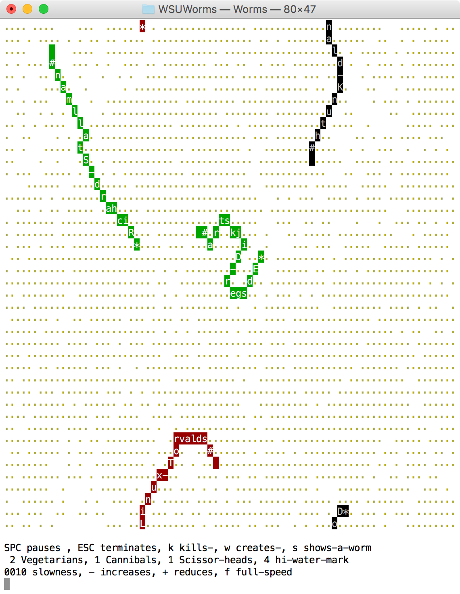
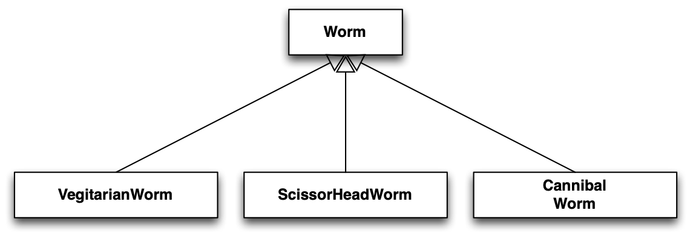
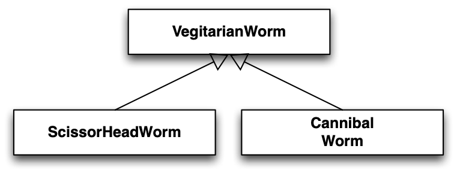

by Erik M. Buck June 2016
Abstract
A goal of object-oriented programming is to maximize programmer productivity by reducing lifetime software development and maintenance costs. The principal technique used to achieve the goal is [object reuse]. An object that is reused saves the programmer time because the object would otherwise need to be reimplemented for each new project. Another potential benefit of reusing objects is that when new features are required or bugs are identified, changes can often be made to a small number of objects, and those changes benefit other projects that rely on the same objects. Most importantly, by reusing objects, fewer total lines of code are written to solve each new problem, and that means there are fewer lines of code to maintain as well.
Several guiding principles of design promote object reuse, and foremost among those principles is [minimization of coupling]. Coupling refers to dependencies between objects. Whenever such dependencies exist, they reduce opportunities for reusing the objects independently. Coupling frequently manifests as situations in which changes to one object necessitate changes to other objects or when one object cannot be reused without also requiring reuse of other objects. Coupling also applies to subsystems within large systems of objects. To achieve object reuse, it's important to look for designs that avoid coupling whenever possible.
This paper examines one of the most common and most severe sources of coupling, object oriented inheritance, and describes use of designs emphasizing composition relationships in preference to inheritance relationships between objects. The classic but trivial "Worms" simulation program is used as a case study. A brief overview of the "Worms" simulation is provided as a basis and case study for application of composition in preference to object oriented inheritance.
Contents
Object Oriented Design - Preferring Composition Over Inheritance: 1
"Worms" Simulation Case Study 1
Abstract 1
Overview of the "Worms" Simulation 3
Board 3
Worms 3
Examination of Design Alternatives 4
Inheritance Based Design 1 4
Critique of Design 1: 5
Composition Based Design 2 6
Critique of Design 2: 7
Appropriate Use of Inheritance in Design 3 8
Conclusion 8
Overview of the "Worms" Simulation
The Worms program simulates worms living their lives in a 2D plane called a board. See Figure 1: Examples of Worms On a Game Board.
Board
The board is represented by a matrix of squares. Positions within the board are denoted by the natural number coordinates of each square in the matrix. Each square may contain zero or one element from the set *{carrot, segment from non-alive worm}* as well as zero or more worm segments of alive worms. See the Worms Section for a description of non-alive worm, alive worm, and worm segments. Carrots and segments of alive worms have a food value that nourishes any worm that eats them.
Worms
Three types of worm are simulated: Vegetarian, Scissor, and Cannibal. Worms may be alive, dead, or eaten. Each worm is composed of one head segment and zero or more non-head segments. Each alive worm[]s head may move in pseudo random directions by changing its position form one position in the board to an adjacent position within the board. If a worm segment moves off an edge of the board, the worm segment wraps around to the opposite side of the board. Non-head segments are ordered with respect to the head and other non-head segments in the same worm. Whenever a segment moves, the immediately subsequent segment if any in the same worm moves to occupy the position just vacated by the segment that moved. In other words, the head moves around the board and non-head segments follow the preceding segment.
Vegetarian worms, Scissor worms, and Cannibal worms may eat any carrot at the same position in the board as the worm's head. Eaten carrots are removed from the board. Cannibal worms may also eat any entire alive worm if the alive worms is composed of one or more segments at the same position as the Cannibal worm's head. Eaten worms are removed from the board. Scissor worms may "slice" any alive worm if the alive worm is composed of one or more segments at the same position as the Scissor worm's head. When a worm is sliced, a sliced worm's segment at the same position as the Scissor worm's head is removed from the board. Any segments preceding the removed segment in the sliced worm remain part of the sliced worm. Any segments after the removed segment in the sliced worm may become part of a new worm with a head at the position of the segment immediately after the removed segment in the sliced worm.
Each alive worm has a stomach with food storage capacity proportional to the number of segments in the worm. Each time an alive worm moves, it consumes some of the food in the its stomach. Each time an alive worm eats, it increases the amount of food in the its stomach. If a worm's stomach becomes empty, the worm becomes dead.
Examination of Design Alternatives
An inheritance based design is examined and critiqued here followed by a design that employs composition instead of inheritance. Then, a design aspect that effectively employs inheritance without incurring excessive coupling is presented.
Inheritance Based Design 1
There are three types of Worm, Vegetarian, Scissor Head, and Cannibal. A natural design inclination might be to create an abstract Worm class that has three concrete subclasses, VegetarianWorm, ScissorHeadWorm, and CannibalWorm. The abstract Worm class presumably declares an interface and possibly some behaviors that all types of worms inherit. The three concrete subclasses of Worm specialize and potentially augment whatever interface and behaviors are defined for all Worms.
To elaborate this design, consider what information is common to all Worms: All worms may be alive, dead, or eaten, so we could encapsulate the alive, dead, or eaten states in the Worm class. All worms have segments including a head, so we could encapsulate storage of segments within the Worm class. All alive worms move within the board, so we could encapsulate a test for alive-ness and worm head movement and subsequent non-head segment movement behavior within the Worm class. We could even declare an abstract template method, eat(), in the Worm class and require that each concrete subclass of Worm implement the eat() method in a way appropriate for the type of worm represented by the concrete class. Note: A template method is a base class method intended/required to be overridden in subclasses to specialize an algorithm implemented primarily in the base class. Ref: [https://en.wikipedia.org/wiki/Template_method_pattern]{.ul} In this case, all worms eat under certain circumstances, but how and what they eat depends on the type of worm. The algorithm to evaluate when it is situationally appropriate to eat can be encapsulated in the Worm base class which, as part of the algorithm implementation, calls the eat() method as appropriate. By polymorphicly overriding the eat() method, the subclasses specialize or customize the inherited algorithm without need to know any details about the algorithm.
Critique of Design 1:
The Worm subclasses either encapsulate too little or too much: It is apparent that substantial portions of the simulation logic may be encapsulated in an abstract Worm class, but what exactly is encapsulated by the concrete subclasses of Worm? In Design 1, the concrete subclasses essentially exist to override the eat() method. It is possible to imagine other differences between the types of worm besides eating behavior. For example, worms might move following logic specific to the type of worm. CannibalWorm instances might travel directly towards other worms while VegetarianWorm instances travel away from other worms. A movement algorithm encapsulated by the Worm class could be implemented using a template method, move(), that subclasses override. Similarly, different worm types might have different stomach sizes or consume more or less food per movement. Those differences could be encapsulated in concrete subclasses of Worm as well. However, if concrete subclasses exist almost entirely to override exactly one method, having the concrete subclasses at all is a heavy handed solution to a simple problem. At the other extreme, if nearly every aspect of Worm behavior is specialized by concrete subclasses, what remains in the base class to be reused? At the extreme, every method of the base class is overridden in a subclass. In that situation, why not use a Java style interface or C++ style pure-abstract class and not have a Worm base class or at least not implement any logic in the Worm base class?
Concrete subclasses of Worm are coupled to the base class: In Design 1, an algorithm that implements worm behavior calls an eat() method that may be overridden by subclasses of Worm to specialize eating behavior. What happens if the type signature (required parameters and/or the return type) of the eat() method is changed in the Worm class? Generally, every subclass of Worm must then be modified to provide new eat() implementations satisfying the new signature. When one class cannot be changed without requiring changes to other classes, that is the very definition of coupling. This is the famous Fragile-Base-Class Problem that every Object Oriented Language suffers to some degree. [https://en.wikipedia.org/wiki/Fragile_base_class]{.ul} To elaborate, what if the maintainer of the Worm class is unaware of concrete subclasses implemented my other teams? How are the other teams notified to make required changes prior to rebuilding with the supposedly reusable Worm simulation support library? Maybe other projects decide to forego updating to the latest version of the Worm class, but then, what if the change to the Worm class signature for the eat() method was made as part of correcting a serious bug or security flaw? Changing the Worm base class inDesign 1 essentially requires recompilation of every Worm subclass and every subclass of the subclasses ad infinitum. This opens a Pandora's box for regression testing.
The Design 1 class hierarchy does not make sense or reflect reality/standard understanding of terms: All worms eat carrots under some circumstances, but VegitarianWorms exclusively eat carrots. Where should carrot eating behavior be implemented? Carrot eating could implemented in the Worm base class so that all subclasses may invoke the base class behavior when it is appropriate to eat carrots. In that design, what exactly makes the VegetarianWorm class different from the Worm base class? It may be possible to eliminate the VegetarianWorm class or more likely replace the Worm base class with the VegetarianWorm class so that ScissorHeadWorm and CannibalWorm are subclasses of VegitarianWorm. But does it make sense to say that a CannibalWorm IS-A VegetarianWorm? This design likely violates the Liskov Substitution Principle (LSP) in the sense that there may be situations where VegetarianWorms may be used where CannibalWorms may not. For example, simulation of a worm nursery where all worms are expected survive when fed with ample carrots cannot tolerate introduction of CannibalWorm instances, but LSP specifically requires that instances of CannibalWorm be usable in any situation where instances of the superclass, VegitarianWorm may be used. Even without invoking LSP, it is absurd to say a cannibal IS-A vegitarian - ask any vegetarians you know. But, we arrived at the design of making CannibalWorm a subclass of VegitarianWorm because i) all worm types sometimes invoke carrot eating behavior, ii) it therefore makes sense to put carrot eating behavior in the base class, iii) there is no content to a VegitarianWorm subclass of the base class if carrot eating behavior is implemented in the base class. It is possible to implement carrot eating in the Worm base class and retain an empty VegetarianWorm class just to differentiate worms that exclusively eat carrots from worms that sometimes eat non-carrots, but creating empty subclasses seems silly or excessively convoluted.
replace the Worm base class with the VegetarianWorm class so that ScissorHeadWorm and CannibalWorm are subclasses of VegitarianWorm. But does it make sense to say that a CannibalWorm IS-A VegetarianWorm? This design likely violates the Liskov Substitution Principle (LSP) in the sense that there may be situations where VegetarianWorms may be used where CannibalWorms may not. For example, simulation of a worm nursery where all worms are expected survive when fed with ample carrots cannot tolerate introduction of CannibalWorm instances, but LSP specifically requires that instances of CannibalWorm be usable in any situation where instances of the superclass, VegitarianWorm may be used. Even without invoking LSP, it is absurd to say a cannibal IS-A vegitarian - ask any vegetarians you know. But, we arrived at the design of making CannibalWorm a subclass of VegitarianWorm because i) all worm types sometimes invoke carrot eating behavior, ii) it therefore makes sense to put carrot eating behavior in the base class, iii) there is no content to a VegitarianWorm subclass of the base class if carrot eating behavior is implemented in the base class. It is possible to implement carrot eating in the Worm base class and retain an empty VegetarianWorm class just to differentiate worms that exclusively eat carrots from worms that sometimes eat non-carrots, but creating empty subclasses seems silly or excessively convoluted.
Composition Based Design 2
Even in Design 1, we implicitly accept that each Worm instance HAS some number of segments. We don't say a worm IS-A collection of worm segments. We could do that: If we have a collection class that stores instances of other classes, we could create the Worm class as a subclass of the collection class that specializes the collection class to store worm segments and implement worm behaviors. We instinctively understand that it is inappropriate to subclass a general purpose collection in such a way. Such a subclass also violates LSP because we cannot use a Worm (that is a specialized collection of worm segments) in every situation where we could use the base collection class.
It is clear upon examination that each worm HAS-A eating behavior as opposed to saying each worm type IS-A Worm that specializes eating in some way. In Design 1, substantial data and logic are encapsulated in the abstract Worm base class. In Design 2, we make the Worm class concrete and deliberately avoid creating any subclasses of Worm. We do this by choosing to "encapsulate what is common and parameterize what is different". The difference between worms is their eating behavior, so why not parameterize that difference. In other words, each instance of Worm HAS-A pointer to a function to call when eating. If there are other differences between worms such as movement behavior, stomach capacity, food consumed per move, etc., we parameterize those as well. Each worm HAS-A stomach capacity. Each worm HAS-A movement style. Each worm HAS-An amount of food consumed per move.
Design 2 provides additional flexibility not available in Design 1. For example, because each worm HAS-A eating behavior, that behavior may be changed over time. A worm might begin life as a cannibal but undergo an ethical transformation to become a vegetarian. In Design 2, such a worm may change its eat() function pointer at any point at run time. In Design 1, the worm would somehow need to change its class at some point in run time. Aspect oriented programming enables such transformations, but the transformations are not generally available or advisable in object oriented languages.
Design 2 potentially avoids an explosion of classes. What would happen in Design 1 if it is later determined there are 2000 different eating behaviors for worms. Would it make sense to create 2000 subclasses of the Worm class? Parameterizing differences avoids the problem. It is much cleaner and simpler to implement 2000 functions than to implement 2000 classes. This is related to the traditional example of composition in graphical user interfaces. We say a text display view has a horizontal scroll bar and it has a vertical scroll bar and it has a set of tab stops and it has particular text content. If we are not Microsoft, we don't say a text view is text content and also it is a horizontal scroller and it is a vertical scroller and it is a set of tab stops. Imagine a class hierarchy: TextContent->TextContentThatScrollsHorizontally->TextContentThatScrollsHorizontallyAndVertically->TextContenThatScrollsHorizontallyAndVerticallyAndHasASetOfTabStops. Then, what happens when the programmer needs text content that scrolls vertically and has tab stops but doesn't scroll horizontally?
Critique of Design 2:
There remains a "fragile type signature problem": Critique B) of Design 1 describes the Fragile-Base-Class Problem noting that any change to a base class method signature potentially requires recompilation of all subclass implementations and all subclasses of those subclasses and possibly every other class that uses one of those subclasses, etc. Recompiling so much code opens a Pandora's box for regression testing. What if instead, each instance of Worm HAS-A pointer to a function it can call when it is appropriate to eat. It may be argued that changing the signature for a eat() function pointer has consequences equally severe to changing the signature of an eat() method intended to be overridden in subclasses. The difference is that the various eat() functions may be declared and implemented in isolation (as the only content of respective implementation files) so that only recompilation of the specific files containing the functions is required. By restricting recompilation to fewer files and certainly much less code, the regression test burden imposed by the change eat() function pointer signature may be greatly reduced. Nevertheless, there remains an form of coupling between the eat() function pointer signature and the various implementations of eat() functions. The problem is a form of "fragile type signature problem" instead of being a Fragile-Base-Class problem. Programming languages that infer type from usage avoid even the "fragile type signature problem". A common way to avoid the fragility is to use the Command Pattern, "Functors", or Labdas. Each of these provide a way to encapsulate arbitrary [immutable] state in an object or language feature the works like a function. Instead of storing a function pointer, store a command, functor, or lambda. These approaches avoid the need to change the function signature in most cases because any unanticipated information needs that may be discovered may be encapsulated the individual commands, functors, or lamas.
There may still be a need for an empty base class: There is no longer an issue with LSP in Design 2 because substitution applies only to subclasses, and Design 2 specifically avoids creation of subclasses. However, what happens if it is later discovered that subclasses of the Worm base class are needed in spite of previous parameterization of differences between worms? It is usually easier to maintain Leskov substitutability when there are fewer subclasses and fewer overrides of base class methods, but Design 2 does not necessarily foreclose the possibility of introducing LSP problems. Design 2 merely greatly reduces the potential for needing a myriad of subclasses.
Appropriate Use of Inheritance in Design 3
Base classes are ideally entirely abstract. In other words, if a base class is found to be needed, make it a pure-abstract-base-class in the C++ style or an Interface in the Java style. Consider the Strategy Design Pattern [https://en.wikipedia.org/wiki/Strategy_pattern] and how it may apply to the Worms simulation.
The abstract AbstractWormsSimUIStrategy class (similar to a Java or C# Interface or an Objective-C Protocol) declares the methods needed by any class that displays Worms simulation state to a user and/or accepts user input. AbstractWormsSimUIStrategy collaborates as part of an implementation of the Strategy Design Pattern. The assumption is that many different concrete strategies for displaying Worms simulation state to users and accepting user input may exist. For example, there may be a terminal (Curses) based textual display or a 2D vector graphics display or a 3D display. Similarly, user input may come from a keyboard or over a network connection or from a data file or from script.
Observe that in this design, the simulation HAS-A strategy for interacting with the user. In essence, the strategy is parameterized in much the same way the eat() function is parameterized in Design 2. The only difference is that we are parameterizing more than one function in a single declaration. Our design communicates that all of the methods defined in the AbstractWormsSimUIStrategy must be implemented for each strategy the simulation might employ. A single instance of the Worms simulation might have multiple strategies at one time (perhaps displaying on several different screens or supporting remote input and local input simultaneously). An instance of Worms simulation might change its strategy at run time (perhaps in reaction to the display resolution change).
Concrete subclasses of AbstractWormsSimUIStrategy implement the interface specified by the AbstractWormsSimUIStrategy class and participate in the Strategy design pattern to [explicitly decouple display and user input from simulation encapsulation].
The Strategy Design Pattern adheres to the practical advice from Scott Meyers, *"More Effective C++: 35 New Ways to Improve Your Programs and Designs 1st Edition" Item 33, "Make non-leaf classes abstract" as elaborated to use the Template Method design pattern in "Virtuality: C/C++ Users Journal, 19, September 2001"* http://www.gotw.ca/publications/mill18.htm.
Use of object oriented inheritance is most appropriate when all non-leaf classes in the inheritance hierarchy are abstract. In other words, interface inheritance is preferred over implementation inheritance.
Conclusion
Seminal work in object oriented design patterns has produces a collection of reusable patterns that describe known good solutions to recurring design problems. This paper does not restate the motivation for creating and using design patters even though two of the most prominent object oriented design patterns, Template Method and Strategy, are applied in the designs described by this paper. Nevertheless, it is vital to recognize that all of the now famous design patterns exist entirely or in part to reduce coupling between components in large software systems.
Object oriented inheritance can be a powerful tool. In the sense that subclasses reuse logic and data inherited from base classes, inheritance actually provides a measure (small and localized) of software reuse. Paradoxically, object oriented inheritance also introduces the tightest possible coupling between base classes and derived subclasses. Design patterns can be seen as approaches that avoid use of inheritance. In cases where inheritance is still employed, interface inheritance is strongly preferred over implementation inheritance. Design patterns promote software reuse at a scale larger than individual methods of individual classes.
The following statement succinctly summarizes the case study presented in this paper and the purpose of all or most software design patterns: *"To promote software reuse, it is essential to avoid coupling, and to avoid coupling, it is essential to avoid object oriented inheritance, and when inheritance is employed, interface inheritance is strongly preferred over implementation inheritance."*